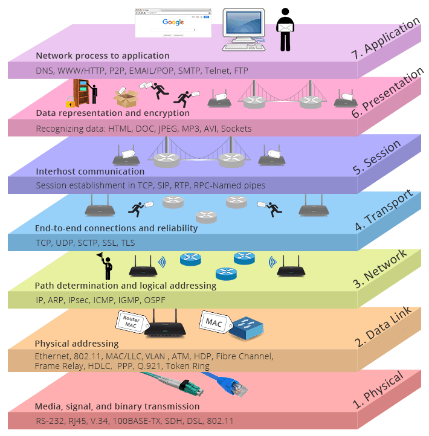
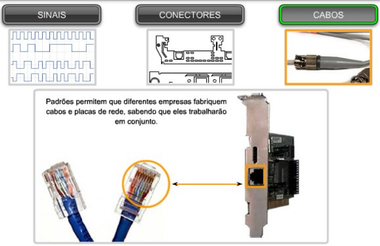
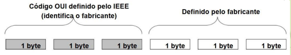
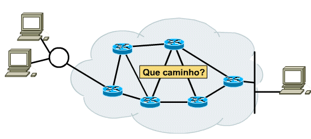
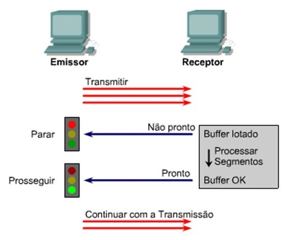
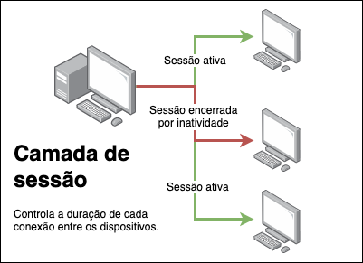
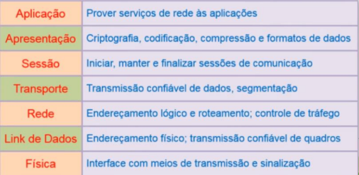

Entender o funcionamento das redes de computadores.
➤ É comum encontrarmos no mercado de trabalho técnicos que
são capazes de bloquear uma porta do switch, configurar um
endereço IP em uma interface etc. Mas nem todos
conseguem realmente visualizar como rede funciona, com
uma visão macro.
➤ A estrutura organizada em camadas facilita a realização de
Troubleshooting (solução de problemas) na rede
➤ Uma das abordagens mais utilizadas é realizar o
troubleshooting indo de baixo para cima, ou seja, da camada
1 (física) em direção a camada 7 (aplicação).
➤ Tópico presente em provas de seleção e em testes de
certificação. Ex. Cisco CCNA
Modelo de Referência OSI
Modelo conceitual, abstrato, que define o funcionamento
de um protocolo ideal em redes de computadores
◉ Objetivos:
➤ Permitir a troca de informações entre computadores de
diferentes fabricantes usando uma arquitetura única
(interoperabilidade)
➤ Uma rede é constituída por equipamentos e sistemas de
diversos fabricantes (cisco, intelbras, Microsoft, Linux,
Apple...)
➤ Servir de base para desenvolvimento de arquiteturas de
protocolos de rede.

CAMADA 1: FÍSICA
➤ Trata dos bits brutos a fim de serem transformados em
sinais no meio físico:
➤ Cada bit recebido pela placa de rede deverá ser
convertido para sinais elétricos (ou ópticos ou ondas
eletromagnéticas) para serem enviados pelo meio
físico (enlace).
➤ Assim, esses bits serão reconhecidos pelo dispositivo
de rede da outra ponta.
➤ Fornece características físicas, mecânicas e elétricas da
rede para definir como será o tráfego de bits físicos
entre dois ou mais dispositivos de redes.
➤ Nesta camada, por exemplo, temos a definição dos
cabos, conectores, antenas, modems, hubs e placas de
redes (sendo que as placas também atuam na camada
2).

CAMADA 2: ENLACE DE DADOS
➤ Faz controle de acesso do meio
➤ Define qual dispositivo pode transmitir em
determinado momento
➤ Organiza os dados a serem transmitidos em conjuntos
de bits denominados quadros (frames)
➤ Detecta e, opcionalmente, corrige erros
➤ Adiciona bits de redundância nos quadros
(checksum)
◉ Endereço MAC
➤ Há uma padronização dos endereços MAC administrada pela IEEE
(Institute of Electrical and Electronics Engineers):

➤ Os 3 primeiros bytes, chamados OUI (Organizationally Unique Identifier)
➤ Destinados a identificação do fabricante (fornecidos pela própria IEEE).
➤ Os 3 últimos bytes são definidos pelo fabricante
➤ O fabricante controla a numeração de cada placa que produz.
◉ Consultar a OUI em https://regauth.standards.ieee.org/standards-ra-web/pub/view.html#registries
◉ Para descobrir o endereço MAC de uma interface de rede:
➤ No Windows:
➤ Prompt de Comandos (terminal)
➤ Clique no Menu Iniciar, digite cmd e pressione enter.
➤ Digite ipconfig /all ou getmac
➤ Interface Gráfica
➤ No menu Iniciar, clique em Configurações e depois em “Rede e Internet”
➤ Clique em “Exibir as propriedades da rede” ou equivalente.
CAMADA 3: REDE
➤ Permite interconexão de redes
➤ Atribui endereços lógicos para o dispositivo origem e para o
dispositivo destino, permitindo que as informações possam ser
encaminhadas através de dispositivos intermediários (roteadores)
➤ Estabelece o caminho (ou rota) que as informações entre origem e
destino devem trafegar (roteamento de pacotes)
➤ Faz controle de congestionamento
➤ Escolha de caminhos alternativos quando o caminho atual
contém enlaces corrompidos ou dispositivos inoperantes
➤ Estabelece a rota mais adequada

CAMADA 4: TRANSPORTE
➤Fornece conectividade confiável fim-a-fim
➤ Quando os pacotes passam por diversos enlaces e roteadores,
podem surgir erros e problemas ocasionados na rede lógica que
precisam ser tratados pelos dispositivos e sistemas finais.
➤ Controle de erros (e retransmissão)
➤ Controle de sequenciamento
➤ Controle de fluxo
➤ Controle de conexão
➤ Possibilita que aplicações distintas possam usar a mesma
infraestrutura/implementação de protocolos das camadas mais
baixas.

.jpg)
CAMADA 5: SESSÃO
➤ Configuração das sessões de comunicações entre
dispositivos da rede
➤ Algumas aplicações exigem uma sincronização na disposição das
informações entre origem e destino e que ocorrem em um ou mais
fluxos. Ex. transações bancárias e aplicações em tempo real
➤ Sincronismo e restabelecimento de uma sessão de
comunicações a partir do ponto em que houve interrupção
na transmissão
➤ Determinar se a comunicação será através do modo half-
duplex ou full-duplex
➤ Autenticação usando senhas

CAMADA 6: APRESENTAÇÃO
➤ Trata da representação dos dados (formatação dos dados)
➤ Define a forma como os dados são reconhecidos e
visualizados no destino
➤ Responsável pela sintaxe e semântica das informações
➤ Realiza transformações adequadas nos dados
➤ Compressão, criptografia, conversão de sintaxe,
codificação de caracteres

CAMADA 7: APLICAÇÃO
➤ Responsável por fornecer os serviços de rede às aplicações
que rodam no computador
➤ Por exemplo, seu navegador acessa a rede, pois é capaz de
se comunicar com a camada de aplicação da pilha de
protocolos
➤ Transferência de arquivos, acesso remoto, correio
eletrônico etc.
RESUMO DAS CAMADAS
